typora-copy-images-to: medias
1. git
1.1. 学习目标
- 理解
- 常用bash系统命令
- git 的概念
- git 和 svn 的区别
- git 的工作流程
- git 管理文件版本
- 使用远程仓库
- 分支管理
- 冲突
- 应用
1.2. 认识命令行 了解
1.2.1. shell
Shell 俗称壳（用来区别于核），是指“提供使用者使用界面”的软件（命令解析器）
如
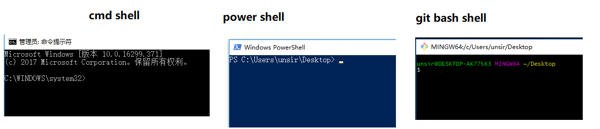
cmd shell 是系统提供的最基本的shell，功能也相对基础。
powser shell 和 git bash shell 可以理解是对 cmd shell 的一层封装，提供了更为强大的命令。
我们平常在系统上所进行的操作，如新增文件，编辑文件，删除文件等。其实底层都是通过一系列的命令来执行的。
1.2.2. 常见bash命令
pwd (Print Working Directory) 查看当前目录
cd (Change Directory) 切换目录，如 cd /etc
ls (List) 查看当前目录下内容，如 ls
mkdir (Make Directory) 创建目录，如 mkdir blog
touch 创建文件，如 touch index.html
cat 查看文件全部内容，如 catindex.html
rm (remove) 删除文件，如 rm index.html、rm -rf blog
rmdir (Remove Directory) 删除文件夹，只能删除空文件夹，不常用
mv (move) 移动文件或重命名，如 mv index.html ./demo/index.html
cp (copy) 复制文件，cp index.html ./demo/index.html
head 查看文件前几行，如 head -5 index.html
history 查看操作历史
whoami 查看当前用户
【注意】，在命令行当中 使用快捷键 进行复制粘贴都是没有效果的。
- ctrl + p 没有效果
- ctrl + c 强制退出到 命令行当中
1.2.3. vi编辑器
- vi编辑器是Linux和Unix上最基本的文本编辑器。由于不需要图形界面，vi是效率很高的文本编辑器
- vi编辑器提供了3种模式，分别是命令模式、插入模式、末行模式 每种模式有不同的功能
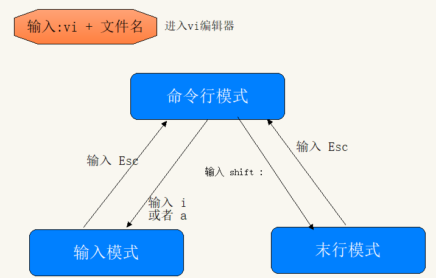
a) 打开/创建文件， vi 文件路径
b) 末行模式 :w保存，:w filenme另存为
c) 末行模式 :q退出
d) 末行模式 :wq保存并退出
e) 末行模式 :e! 撤销更改，返回到上一次保存的状态
f) 末行模式 :q! 不保存强制退出
================================================================
h) 命令模式 ZZ（大写）保存并退出
i) 命令模式 u辙销操作，可多次使用
j) 命令模式 dd删除当前行
k) 命令模式 yy复制当前行
l) 命令模式 p 粘贴内容
o) 命令模式 i进入编辑模式，当前光标处插入
p) 命令模式 a进入编辑模式，当前光标后插入
q) 命令模式 A进入编辑模式，光标移动到行尾
r) 命令模式 o进入编辑模式，当前行下面插入新行
s) 命令模式 O进入编辑模式，当前行上面插入新行
1.3. git概述
Git是一款免费、开源的分布式版本控制系统，用于敏捷高效地处理任何或小或大的项目。
它可以处理以下需求
- 方便的和团队共享文件
- 对文件进行版本的控制
1.4. git和svn对比
1.4.1. svn
SVN是集中式版本控制系统，版本库是集中放在中央服务器的。
每次需要获取最新的文件或者保存自己当前的记录时，都必须要连接到服务器才可以。
关键字：
- 集中式
- 需要连接外网
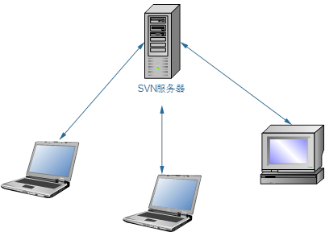
1.4.2. git
Git是分布式版本控制系统，它没有中央服务器，每个人的电脑就是一个完整的版本库。
当需要和别人分享文件时时，再联网即可。
关键字:
- 分布式
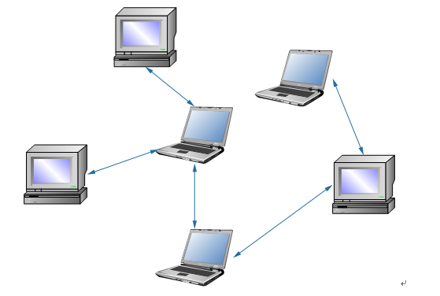
1.5. git 安装
Git可以在Linux、Unix、Mac和Windows这几大平台上正常运行使用。
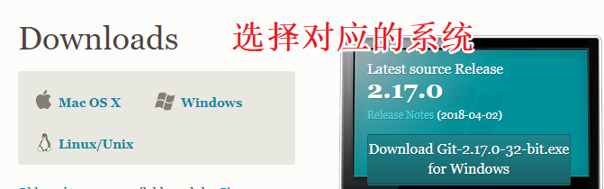
安装成功后（windows下），在系统的任意目录下 点击 鼠标右键 出现以下菜单，代表安装成功。

1.6. 初次运行 Git 前的配置
在团队的项目开发中，当我们对进行文件的修改时，都应该告诉服务器 是谁做的修改。所以 需要 配置个人信息。
1.6.1. 全局配置
打开 git 命令行工具
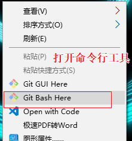
输入
# 配置 用户名
git config --global user.name xxx
# 配置 邮箱
git config --global user.email xxx
# 查看用户名
git config user.name
1.7. git 基础
如 我们想使用 git 对 该目录进行版本控制
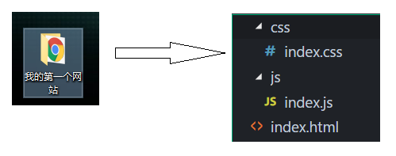
1.7.1. 创建版本库
在 我的第一个网站 目录 内 输入 git init 初始化 仓库
git init
可以看到，在该目录下 多了一个 隐藏文件夹 .git 该文件夹便是实现存放版本记录的地方。不要手动修改！
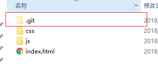
1.7.2. 添加到暂存区
现在我们的代码 和 git 仓库 还没有直接的联系 查看 git 仓库状态 输入 git status
git status

我们把添加跟踪的步骤，叫做 添加到 暂存区
输入 git add * 对所有文件进行跟踪
git add *
此时，重新 查看 仓库状态
git status
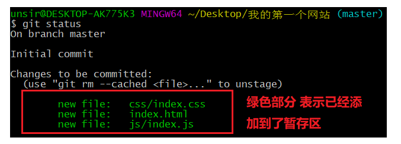
因此，我们可以 随时的 输入 git status 来查看当前仓库的状态，来获得 提示。
1.7.3. 提交本地仓库
暂存区的意思 只是暂时存储文件，当需要把对文件的操作 永久存储下来时，需要在把暂存区中的文件提交到到本地仓库。
输入以下命令进行提交，同时 还需要备注 信息 如 初始化项目 、 新增了购物接口 等。
git commit -m "初始化项目"
重新输入 git status 查看git 仓库状态

1.7.4. 小结
把刚才操作的流程，换成专业的术语。
- 工作目录 ：刚才操作的文件夹
我的第一个网站就称为 工作目录 - 暂存区 ： 是用来存放 对文件进行了 跟踪，但是还没有 提交到 本地仓库 的地方
- 本地仓库： 最终实现 文件版本管理的地方。
1.8. 修改文件
在上个操作的基础上，我们对文件进行修改，然后让 git 记录这次修改的操作。
编辑 index.html 文件 输入
<h1>完成了登录页面的设计</h1>
此 时 index.html 文件发生了修改 我们输入 git status 查看仓库状态
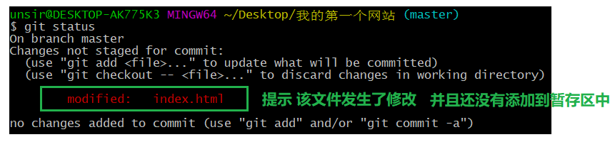
1.8.1. 添加到暂存区
以上的修改，可以理解为 完成了一个功能，此时，也需要将这些代码提交到 本地仓库 中进行记录管理。因此，先添加到 暂存区 再提交到 本地仓库 中即可。
将 修改的文件添加到 暂存区 输入
git add *
查看git 仓库状态
git status
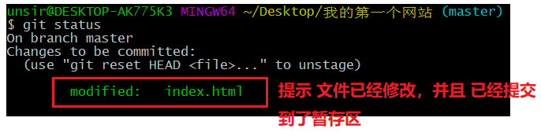
1.8.2. 提交到本地仓库
将暂存区中的文件提交的 本地仓库 实现 版本 记录
git commit -m "完成了登录功能"
查看git 仓库状态
git status
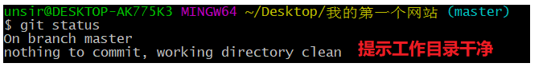
1.9. 删除文件
在git 仓库中，有时候删除一些无效的文件。以删除 css/index.css 为例
手动将该 文件夹整个删除 删除成功 如下
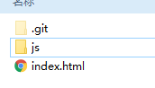
查看仓库状态
git status
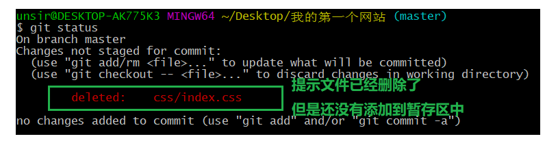
1.9.1. 添加到暂存区
删除了 文件，也可以了解为是对项目 进行了一次升级改造，因此同样需要把该 操作 提交到 本地仓库
输入 git add ./ 请注意 当添加删除操作时 使用 git add * 是无效的。（git add * 不会缓存删除操作）
git add ./
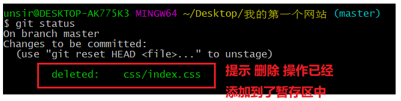
1.9.2. 提交到本地仓库
把该 删除操作 提交到 本地仓库 实现 版本记录
git commit -m "删除了css文件夹"
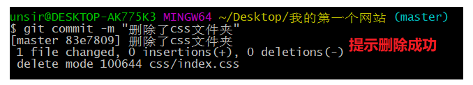
查本地仓库的状态
git status
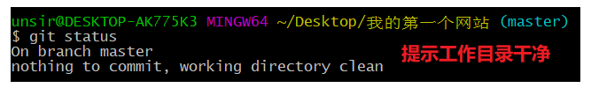
1.10. 忽略文件
有时候，在工作目录下的某些文件，是属于私人的或者是项目运行所产生的临时文件，并不需要添加到 版本控制中。 如 新增一个文件 私人密码
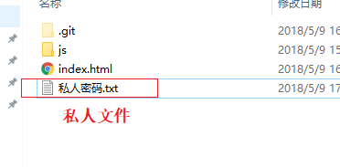
查看git仓库状态
git status
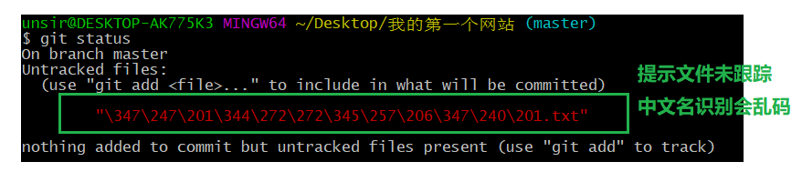
此时 我们可以使用 git 规定的一个文件 .gitignore 在里面指定需要过滤的文件
1.10.1. 创建 忽略文件清单
直接在windows 右键 新建文件 gitignore 会创建失败。
使用命令行的方式创建
touch .gitignore
编辑 .gitignore 文件 直接写入 要忽略的文件名即可
# 忽略该文件
私人密码.txt
查看git仓库状态
git status

大部分情况下，我们也需要将 .gitignore 文件一起提交到本地仓库中实行版本控制
添加到暂存区 该文件 使用 git add * 无效 需要手动指定文件名
git add .gitignore
提交到本地仓库
git commit -m "添加了忽略文件列表"
1.10.2. 忽略文件语法
语法大部分和正则类似
空行或是以#开头的行即注释行将被忽略；
# 这种是注释以斜杠 “/” 结尾表示目录；
css/以星号 “*” 通配多个字符；
*.js以问号 “?” 通配单个字符
以方括号 “[]” 包含单个字符的匹配列表；
以叹号 “!” 表示不忽略(跟踪)匹配到的文件或目录；
可以在前面添加斜杠 “/” 来避免递归
# 忽略根目录下的 css 文件夹 /css # 忽略所有的css文件夹 css/
1.11. 推送到远程仓库
因为在团队开发中，我们的项目文件是需要和组员进行分享的，所以实现这个功能，就必须得借助远程仓库。
远程仓库只是 本地仓库的一个备份。
- github做为最著名的git仓库托管商,是行业内的绝对权威.它给无数的开发者提供了共同学习发展的平台.
- 码云是github的国产版,对国人做了针对性的优化,在国内也是使用者众多
我们主要演示 github的使用，码云 强烈建议 课下 自己学习使用。
1.11.1. 注册 github
先注册一个 github帐号
1.11.2. 新建远程仓库
1 一个github帐号可以建立多个远程仓库，一般 一个项目使用一个仓库。
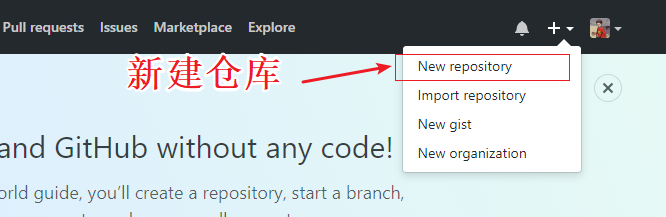
2 填写仓库信息
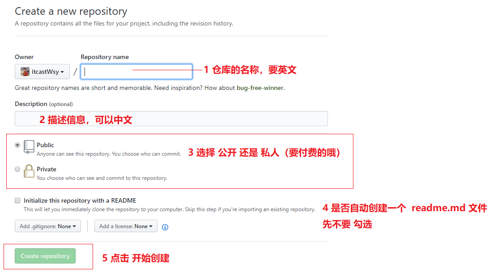
3 创建成功
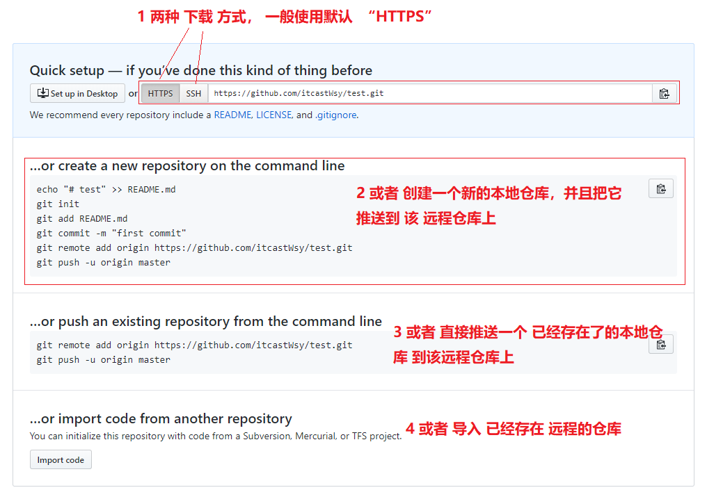
1.11.3. 推送到远程仓库
远程仓库建立完毕之后，我们可以 将 之前的 本地仓库 我的第一个网站 推送到上面新建的 test 远程仓库上
先记录远程仓库的地址
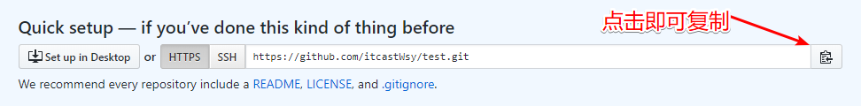
https://github.com/itcastWsy/test.git
把远程仓库 记录在一个 变量 origin 上 该名字可自定义
git remote add origin https://github.com/itcastWsy/test.git
在推送到远程仓库之前，先确保 本地仓库已经 执行过 commit 了，这样 才会保证 本地仓库 和远程仓库一致。
查看本地仓库状态
git status
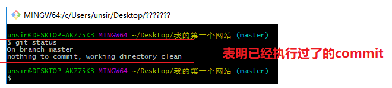
开始推送
git push -u origin master
提示输入用户名 ，直接输入即可 如 itcastWsy 然后按下回车
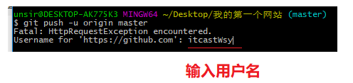
提示输入密码
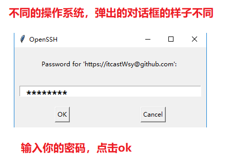
没有看到报错，就是 推送成功
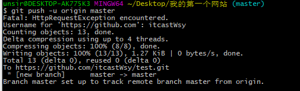
同时，刷新一下 github 页面 看到远程仓库上 显示出 仓库的信息了。
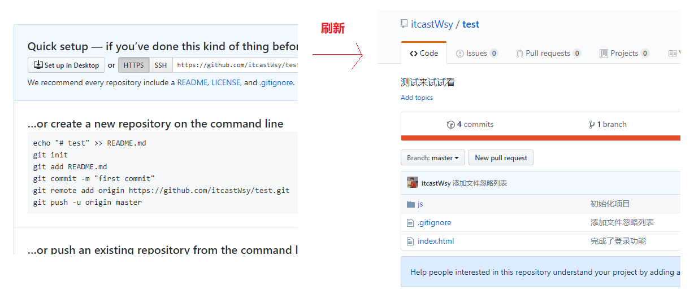
1.12. 从远程仓库克隆
假设 建立本地仓库、 推送到远程仓库 的工作都是项目经理完成了。此时，你做为一个新加入项目的 程序猿，要做的事就是从远程仓库上 克隆 代码。
问项目经理拿 远程仓库的地址
https://github.com/itcastWsy/test.git
在你的电脑上任意目录下（如 桌面） 开始克隆
在桌面上 打开 git bash 命令行工具 输入
git clone https://github.com/itcastWsy/test.git
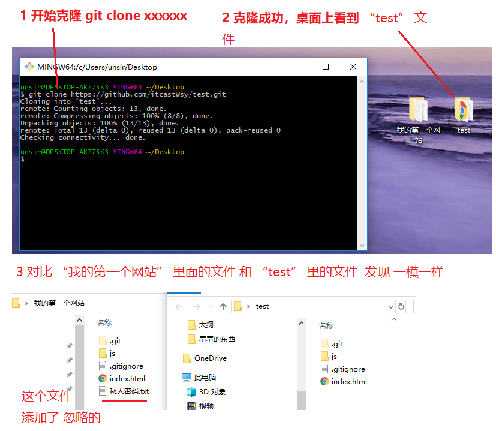
1.13. 从远程仓库获取更新
此时，项目经理的代码 和 你的代码 是一模一样的。现在 项目经理 新增了一个文件 home.html,并把它提交到远程仓库上。
新建 home.html 文件
touch home.html添加到暂存区
git add *提交到本地仓库
git commit -m "新增了home.html"推送到远程仓库
git push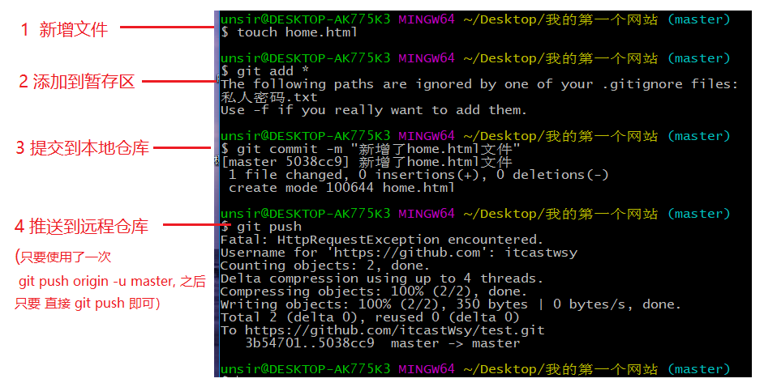
查看远程仓库
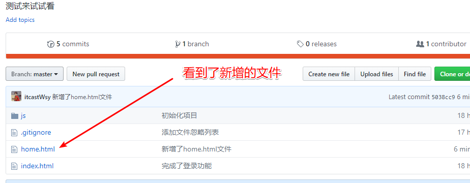
那么现在 做为程序员的你 需要把代码 进行更新
回到 test 文件夹内，打开 git bash 命令行
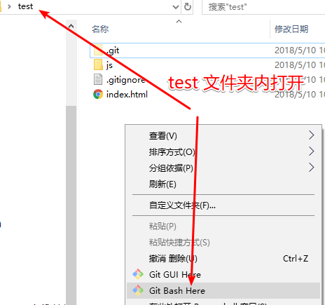
输入以下命令 进行更新
git pull
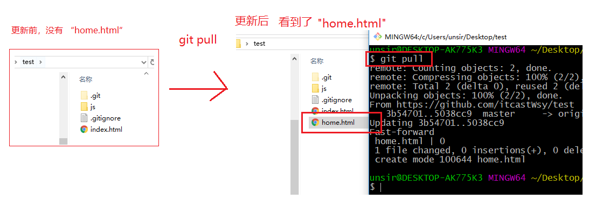
1.14. git clone 和 git pull 的区别
- git clone 是克隆，只需要执行一次
- git pull 是 更新，后期反复使用
1.15. 还原文件到上次commit状态
假设做为程序员的你，刚刚把代码更新下来，便上厕所去了，这个时候你的熊孩子趁你不在，对着你的键盘就是一顿 啪啪啪 ，把你 home.html 文件敲得面目全非。
你现在想要做的事，就是把 home.html 还原到 拉取下来的状态。
原来的home.html 内容是空的。（你是不知道里面的内容的）
熊孩子 把 home.html 改成了
<h1>钱多话少死的早</h1>
开始还原，在 test 目录下，输入命令行
git checkout home.html
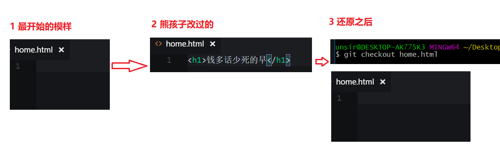
如果想要还原多个文件，可以
还原文件夹 css 文件夹
git checkout css还原当前目录的所有文件
git checkout ./
1.16. 查看版本历史
做为 新加入项目的你，想要了解 这个项目，到底做过了哪些版本，想要看到之前每一次提交时的备注信息
此时，你的 test 文件夹内 输入 命令进行查看
git log
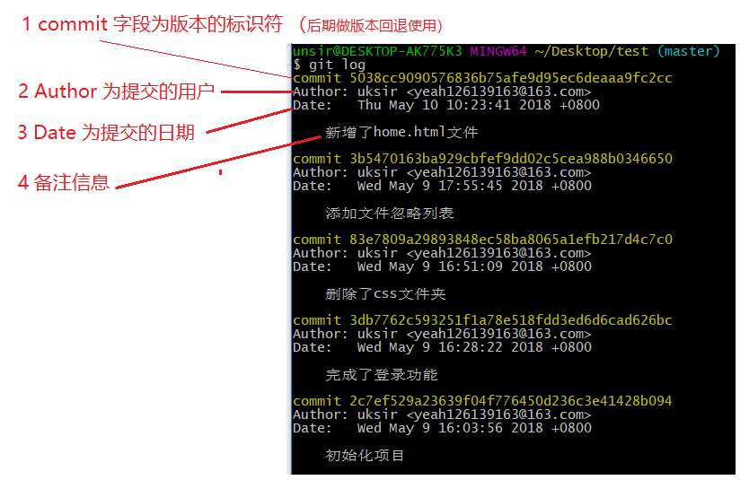
1.17. 还原到某一个版本
做为 新加入项目的你，来获取了最新的代码之后，发现项目太大了，你不好去学习和了解 其中的某一个模块的功能和代码。如
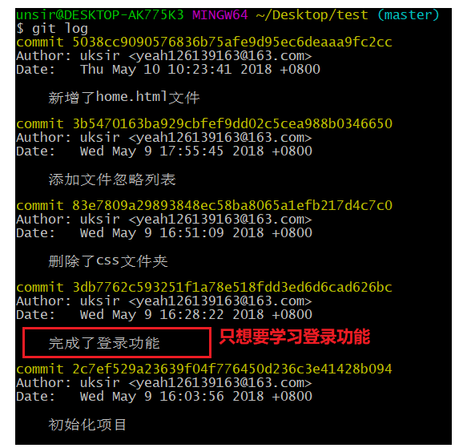
此时，可以把整个项目 还原到 完成了登录功能的状态
记录 该版本的 commit 字段
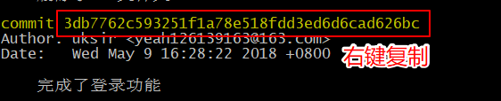
3db7762c593251f1a78e518fdd3ed6d6cad626bc
开始还原 （commit 字段 最少 写 6位）
git reset -–hard 3db7762c593251f1a78e518fdd3ed6d6cad626bc
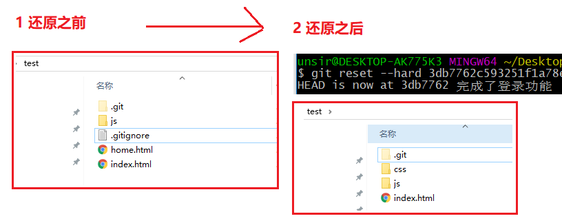
如果，在次状态下又想回到 最新的版本 新增了home.html 呢 查看提交信息
git log
发现 完成登录功能 之后的日志信息 丢失了。
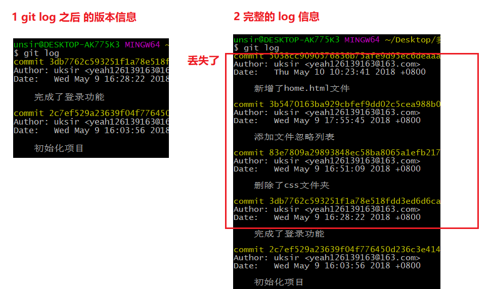
此时，输入
git reflog
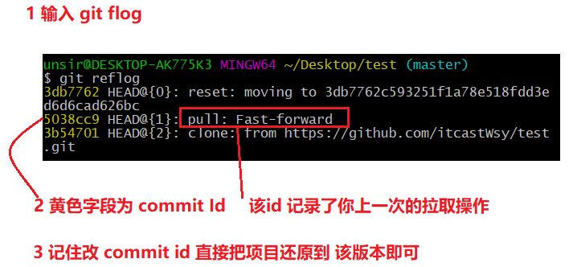
还原到最新的版本
git reset --hard 5038cc9
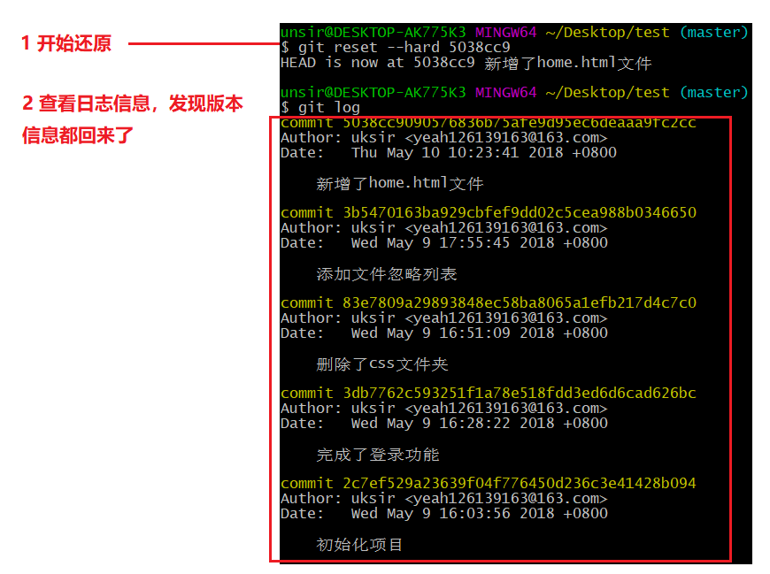
1.17.1. 小结
git checkout xxx只能还原文件到上一个版本git reset --hard 'commit的id'可以还原到任意版本git reflog可以查看丢失了的版本的日志信息
1.18. 配置ssh
我们把文件从本地仓库推送到远程仓库的方式有两种
- HTTPS 每次都要手动输入 用户名和密码
- SSH 配置证书后，不用手动输入用户名和密码
1.18.1. 配置证书
在git bash 命令行中输入
ssh-keygen -t rsa -C "邮箱地址"
然后一直按回车。直到出现如下界面 代表本地 证书生成成功
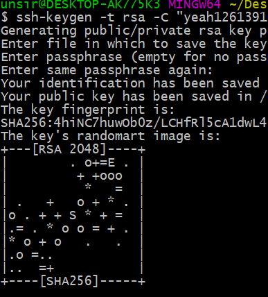
输入命令 打印密钥
cat ~/.ssh/id_rsa.pub
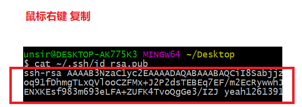
按以下步骤进行粘贴即可
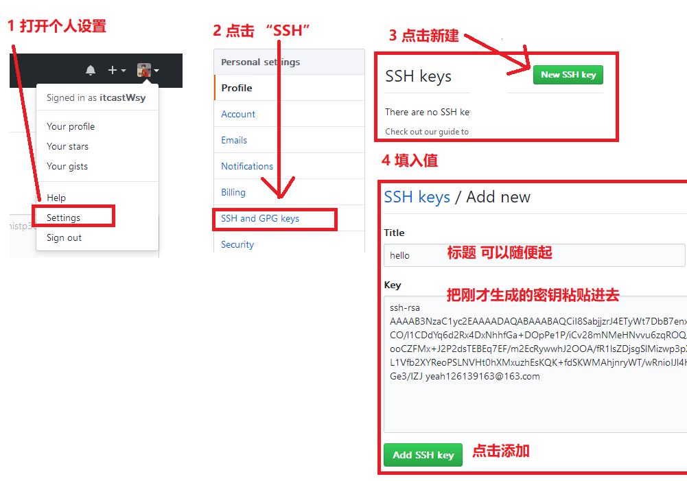
输入
ssh -T git@github.com
出现以下界面代表成功。如果失败，建议多尝试几次。
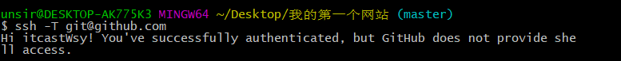
1.18.2. 将提交方式 HTTPS 改为 SSH
复制 SSH 地址
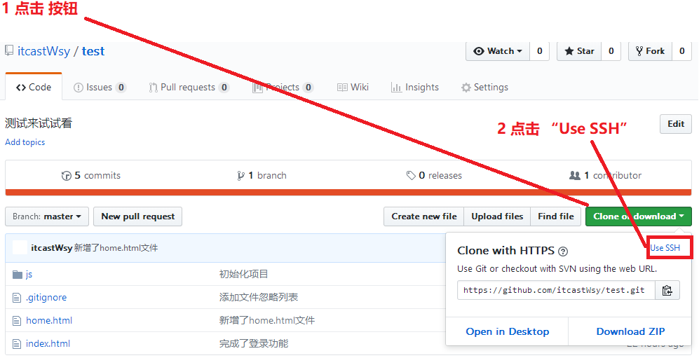
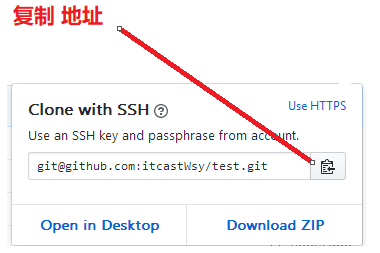
git@github.com:itcastWsy/test.git
修改 origin 地址
因为之前已经将 地址 存入 origin 变量了 。查看 origin
git remote -v
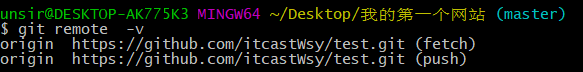
此时，将origin的地址 改为 ssh 地址即可
git remote set-url origin git@github.com:itcastWsy/test.git
重新查看 git remote -v 发现修改成功
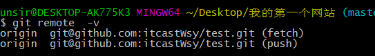
按照以上步骤执行完毕之后，再次推送到远程仓库时，就不用再输入用户名和密码了。
测试

1.19. 分支
其实我们在使用git的时候，一直在 git的主分支master也是默认分支下进行工作的。也可以手动开启另外的分支进行开发。
开启新的的分支时可以理解为复制了一个相同的副本.内容完全一样
分支的作用是提供了一种方便、高效的管理项目的手段。
学习分支,我们需要从需求入手
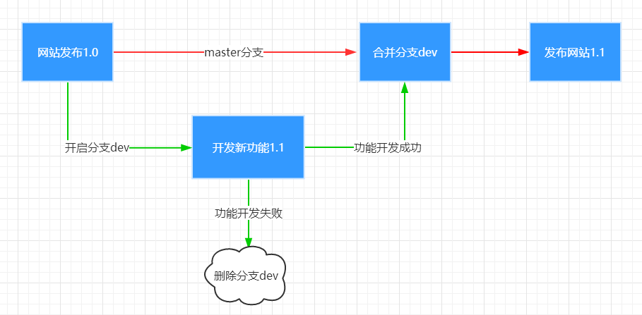
流程解释:
网站发布了第一个版本
此时,需要研发新功能1.1版本
开启新的分支
dev进行研发- 研发成功，将分支
dev合并到主分支master上,发布新版本1.1 - 研发失败，直接删除分支
dev即可
经过以上流程,我们可以在毫无风险的情况下开发新功能,不会影响到已经发布了的网站。
- 研发成功，将分支
1.19.1. 网站发布0版本
在目下下,新建文件夹 web，并在里新建一个空的文件index.html 提交到本地仓库
1.19.2. 开启新分支
在完成1.0版本发布后（commit之后），开启新分支 dev（dev为分支名）
git branch dev
查看当前仓库下的分支
git branch
1.19.3. 切换分支
此时，需要手动切换分支到dev上，
git checkout dev
1.19.4. 在分支dev上开发功能
此时，我们可以在分支dev上，放心的进行功能开发。编辑文件 index.html 添加一下内容
开发新功能1.0
提交到仓库
git add .
git commit -m "dev下开发新功能1.1"
1.19.5. 合并分支
新功能开发完毕，需要将分支dev的代码合并到主分支master上
切换回主分支
mastergit checkout master合并分支
devgit merge dev
1.19.6. 删除分支
既然 分支dev的功能已经完成，我们可以将其删除。
git branch -d dev
查看git仓库下的分支，发现 分支dev 确实没有了
1.20. 冲突
冲突是指当两个同名的文件进行合并时，会产生的一种场景。
1.20.1. 冲突描述
当把 我的代码内的两个文件 拷贝到 他的代码 文件夹内时
可以看到此时，冲突就产生了 因为电脑并不知道 你想要保留哪一份 index.html 文件（home.html没有冲突） ，于是，弹出对话框，让用户进行选择。
所以冲突具有以下特点
- 在文件进行合并时容易产生
- 冲突的解决方法，只能是用户决定
1.21. 分支合并时的冲突
刚才的演示，是人为手动操作导致的。当我们使用分支，进行合并的时候，也会出现冲突，只不过这次冲突的 提示框 和 解决方法 都是通过 命令行来体现的。
1.21.1. 初始化仓库
- 新建一个文件夹
冲突的演示 - 初始化 git 仓库
git init - 新建文件
index.html - 添加到暂存区
- 提交到本地仓库

1.21.2. 开启 分支 dev
初始化完仓库之后，开启分支dev，此时 分支dev 的内容和主分支master 是一模一样的
git branch dev
在分支master下，
- 编辑 index.html 输入
主分支master下的编辑 - 添加到暂存区
git add * - 提交到本地仓库
git commit -m "master下修改了index.html"
切换到 分支 dev下
切换分支
git checkout dev编辑 index.html 输入
分支dev下的编辑添加到暂存区
git add *提交到本地仓库
git commit -m "dev下修改了index.html"

完成了以上操作之后，主分支master和 分支dev 下的index.html 分别是
1.21.3. 合并冲突分支以及解决
此时准备分支合并，
切换回主分支
git checkout master执行合并
git merge dev弹出提示 文件合并产生冲突了此时，手动解决冲突，打开
index.html文件 发现添加到暂存区
提交到本地仓库
至此，冲突的产生以及解决，演示完毕。 强烈建议 自行多练习该步骤，了解每一步的含义。
1.22. 常用git命令
| 注解 | 命令 |
|---|---|
| git reset HEAD XXX | 从暂存区移出 |
| git diff | 查看编辑过的文件和 版本库的区别 |
| git config user.name xxx | 配置当前仓库的用户名 |
| git config user.email xxx | 配置当前仓库的邮箱 |
| git init | 初始化 git 仓库 |
| git add xxx | 添加到暂存区 |
| git commit -m "备注" | 提交到本地仓库 |
| git commit -m "备注" -a | git add 和 git commit 的综合 |
| git remote -v | 查看远程仓库地址 |
| git remote add 远程仓库名 远程仓库地址 | 添加远程仓库地址 |
| git remote rm 远程仓库名 | 删除远程仓库 |
| git remote set-url 远程仓库名 远程仓库地址 | 修改远程仓库地址 |
| git push 远程仓库地址 master | 提交到远程仓库 |
| git push 远程仓库地址 master -u | 提交到远程仓库 (以后 git push 即可) |
| git clone 远程仓库地址 | 克隆仓库 |
| git pull | 拉取更新 |
| ssh-keygen -t rsa -C "邮箱地址" | 生成 ssh证书 |
| cat ~/.ssh/id_rsa.pub | 查看ssh证书 |
| git reset --hard "commit Id" | 还原到某版本 |
| git reset --hared HEAD^ | 还原到上一个版本 |
| git log | 查看版本历史 |
| git reflog | 查看更强大的版本历史 |
| git checkout 文件名 | 还原文件到上一个版本 |
| git branch 分支名 | 创建分支 |
| git checkout 分支名 | 切换到分支 |
| git merge 分支名 | 合并分支 |
| git branch | 查看分支 |
| git branch -d 分支名 | 删除分支 |